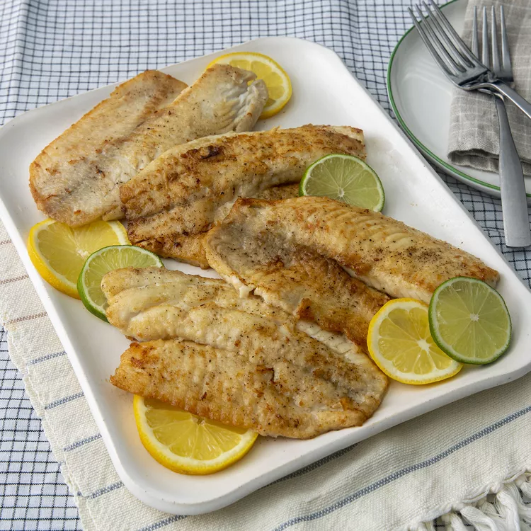

Pan-Seared Tilapia

Description
Learn how to cook tilapia with this easy, 15-minute recipe for pan-seared tilapia that's delicious and full of flavor.
This simple method of cooking fish fillets is great for a weeknight meal. Serve with fresh veggies.
--Ingredients--
- 4 (4 ounce) tilapia fillets
- salt and ground black pepper to taste
- 1/2 cup all-purpose flour
- 1 tablespoon olive oil
- 2 tablespoons unsalted butter, melted
- 1 tablespoon lemon juice, or to taste (Optional)
- 1 teaspoon chopped fresh flat-leaf parsley, or to taste (Optional)
- 1/2 teaspoon chopped fresh thyme, or to taste (Optional)
--Steps--
- Rinse tilapia fillets in cold water and pat dry with paper towels. Season both
sides of each fillet with salt and pepper.
- Place flour in a shallow dish. Gently press each fillet into the flour to coat and
shake off any excess.
- Heat olive oil in a large skillet over medium-high heat. Cook tilapia fillets in the hot oil, in batches if necessary,
until fish flakes easily with a fork, about 4 minutes per side.
- Brush the melted butter onto the tilapia fillets in the last minute before
removing from the skillet.
- Drizzle fillets with lemon juice and garnish with parsley and thyme.